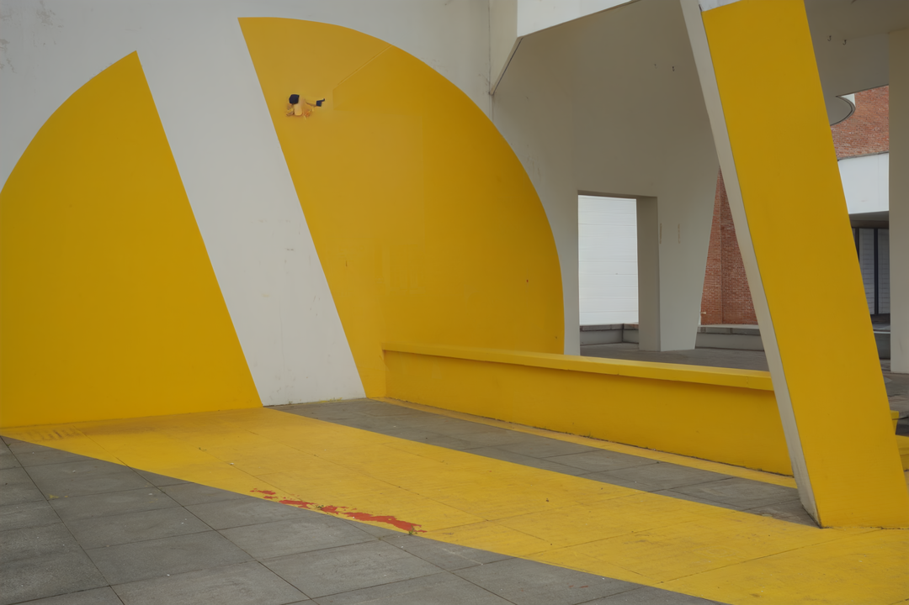
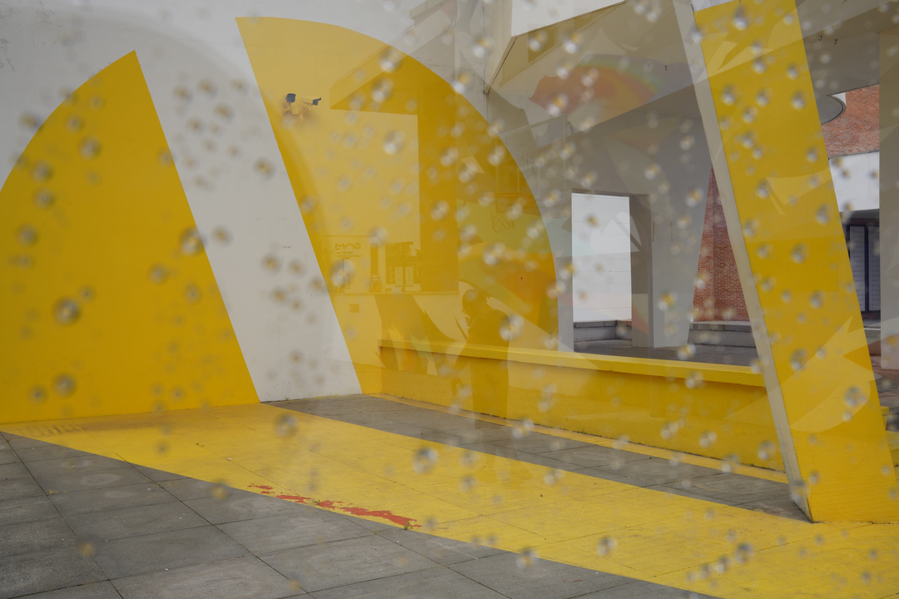
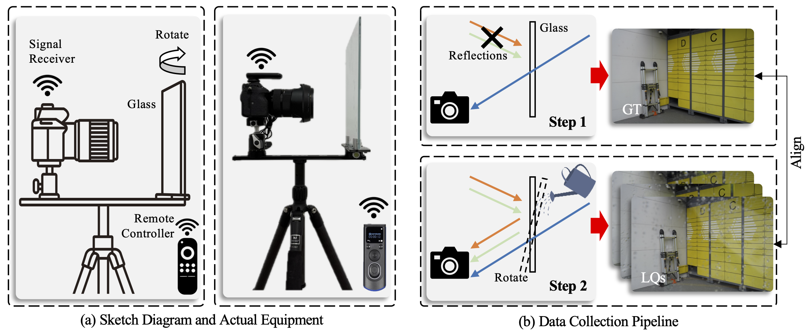

Abstract
When capturing images through glass surfaces or windshields on rainy days, raindrops and reflections frequently co-occur to significantly reduce the visibility of captured images. This practical problem lacks attention and needs to be resolved urgently. Prior de-raindrop, de-reflection, and all-in-one models have failed to address this composite degradation. To this end, we formally define theUnified Removal of Raindrops and Reflections (UR3) task for the first time and construct a real-shot dataset, which provides a new benchmark with substantial, high-quality, diverse image pairs. Then, we propose a novel diffusion-based framework DiffUR3, with several target designs to address this challenging task. By leveraging the powerful generative prior, we successfully removes both types of degradations. Extensive experiments demonstrate that our method achieves state-of-the-art performance on our benchmark and challenging in-the-wild images.
Visual Effects
Using DiffUR3, you can effectively recover images captured through rainy glass, where raindrops and reflections jointly obscure the background scene. Drag the slider to compare degraded inputs and our results.


RDRF Dataset
We introduce the RainDrop and ReFlection dataset, the first real-world benchmark for unified raindrop and reflection removal. It provides paired clean and degraded images captured under controlled yet realistic conditions.
Collection
We build a controllable acquisition setup with a camera, glass slab, remote shutter, and light-blocking box. Clean images are captured by suppressing reflections, while degraded images are obtained by spraying water on the glass and adjusting its angle to introduce realistic raindrops and reflections.

Overview of our real-world data collection setup.
Dataset Samples
Browse samples from different subsets of our RDRF dataset.
BibTeX
@inproceedings{liu2026diffur3,
title = {Unified Removal of Raindrops and Reflections: A New Benchmark and A Novel Pipeline},
author = {Xingyu Liu and Zewei He and Yu Chen and Chunyu Zhu and Zixuan Chen and Xing Luo and Zhe-Ming Lu},
booktitle = {European Conference on Computer Vision (ECCV)},
year = {2026}
}